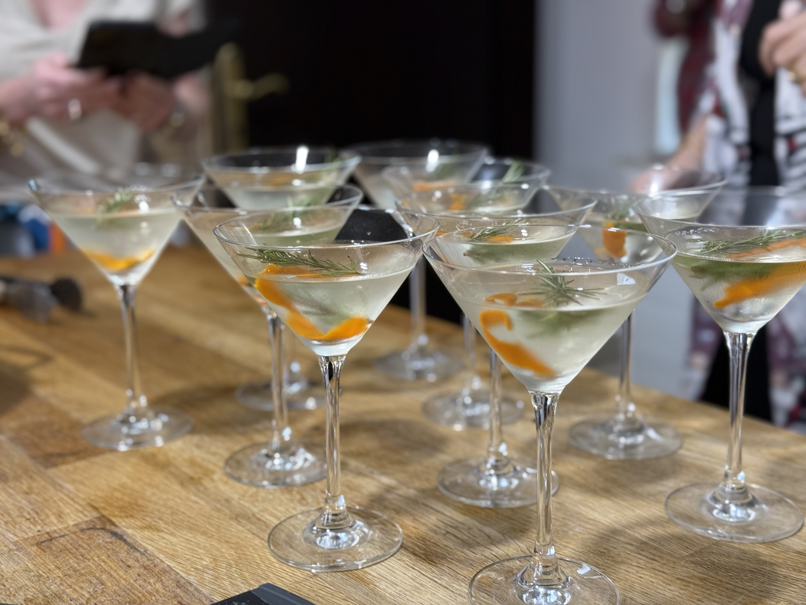

Rosemary Martini

Christmas tree in a glass
Two different gins and muddled rosemary give delightful herbal notes to this crisp, Christmasy cocktail. A splash of orange bitters and a twist of orange peel finish this off beautifully.
Angela and Jason, Christmas 2025
Ingredients
- 1 oz Bombay Sapphire gin
- 1 oz Monkey 47 gin
- 1/2 oz vermouth
- splash of orange bitters
- 2 sprigs of rosemary, 1 for muddling, 1 for garnish
- 1 piece orange peel, 2 inches long, twisted
- cubed ice
Steps
- Chill martini glass in the refrigerator or freezer
- Gently muddle rosemary sprig in a cocktail shaker
- Add ice, gins, vermouth and bitters to the shaker
- Shake vigorously for several seconds
- Strain martini into the chilled glass
- Garnish with a sprig of rosemary and a twist of orange peel
Return to home page